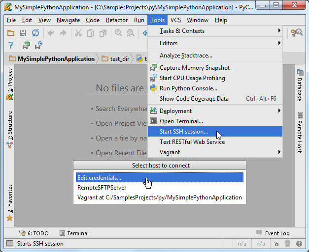
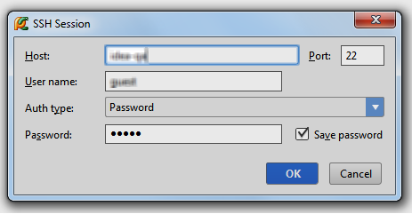
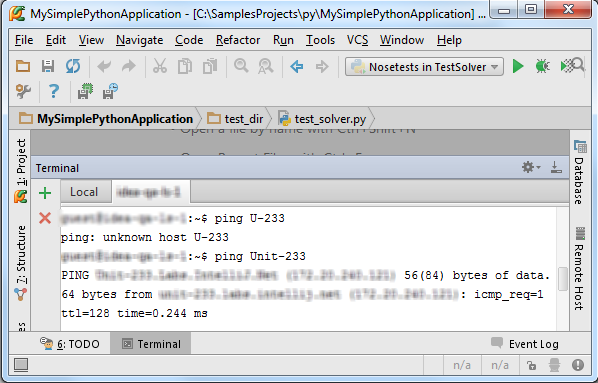
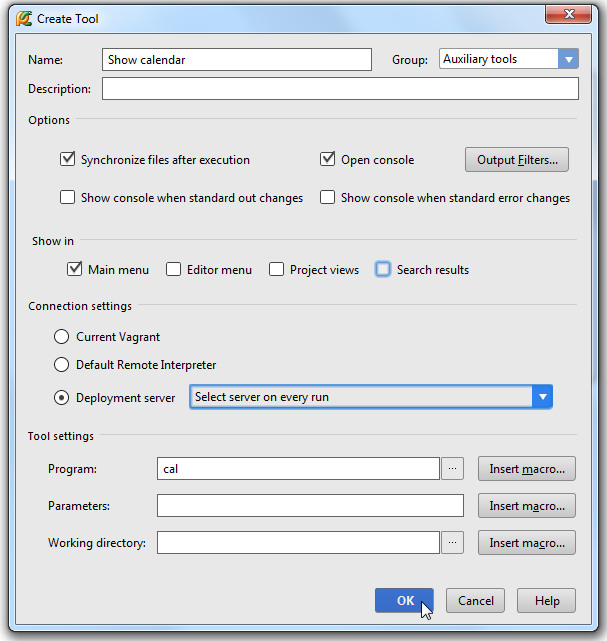
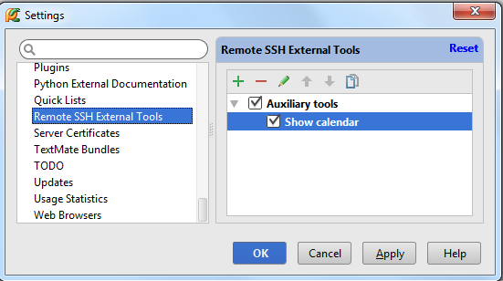
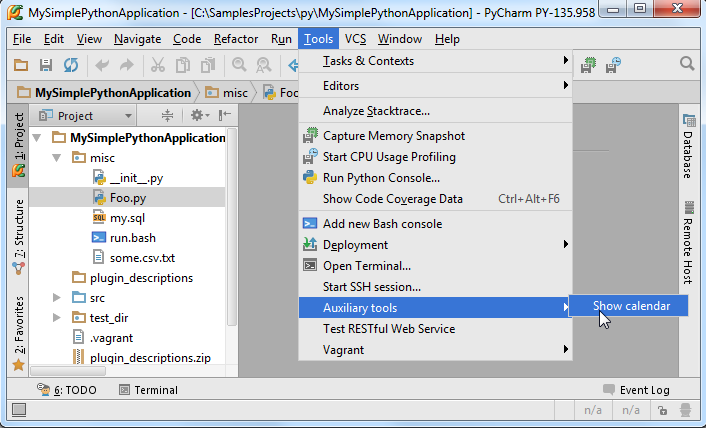
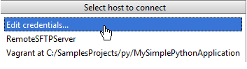
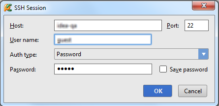
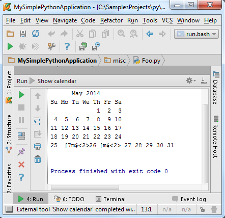
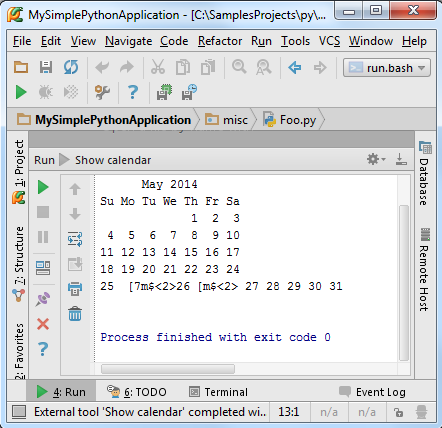

1、主题
如何使用Pycahrm内置终端以及远程SSH工具。
2、准备工作
Pycharm版本为3.0或更高
连接SSH服务器
3、使用SSH客户端
4、开启连接
选择Tools | Start SSH Session...的主菜单命令，单击Edit credentials：
 5、提供连接信息
在Session对话框中输入建立连接所需相关信息：

6、建立连接
单击OK，连接开始：

7、SSH会话功能
运行命令、粘贴复制、浏览历史命令……
8、远程SSH外部工具的作用
定义一个外部工具用来脱机运行命令，如显示一个日历。
9、配置一个SSH外部工具
打开设置对话框，在IDE Settings节点下，选择 Remote SSH External Tool页面，单击绿色加号创建一个新的远程工具，在Create Tool dialog窗口中进行一些必要设置：
（1）Name
Description栏提供多种类型的描述。
Group指定创建级联菜单，用以存放外部工具名
（2）Show in指定新工具的显示位置，这里只勾选Main Menu
（3）Connection settings区域选择Select server on every run的单选按钮，即每次运行服务都需要进行详细设置。
（4）在Tool settings区域，指定待远程执行的工具，参数和工作目录是可选的，也可以用宏来代替当前命令：

单击OK，关闭 Create Tool dialog对话框，返回Remote SSH External Tool页，在下拉列表中可以看到新创建的工具：

其他控件信息详见 product documentation。
10、加载SSH外部工具
设置好的工具会在menus中显示以供选择，这里显示在Tools菜单下：

接下来尝试使用这个命令。首先选择要连接的服务器：

进行相关设置：

最后，顺利显示日历：

SSH会话运行在终端工具窗口，外部工具在Run tool window窗口中进行加载：
